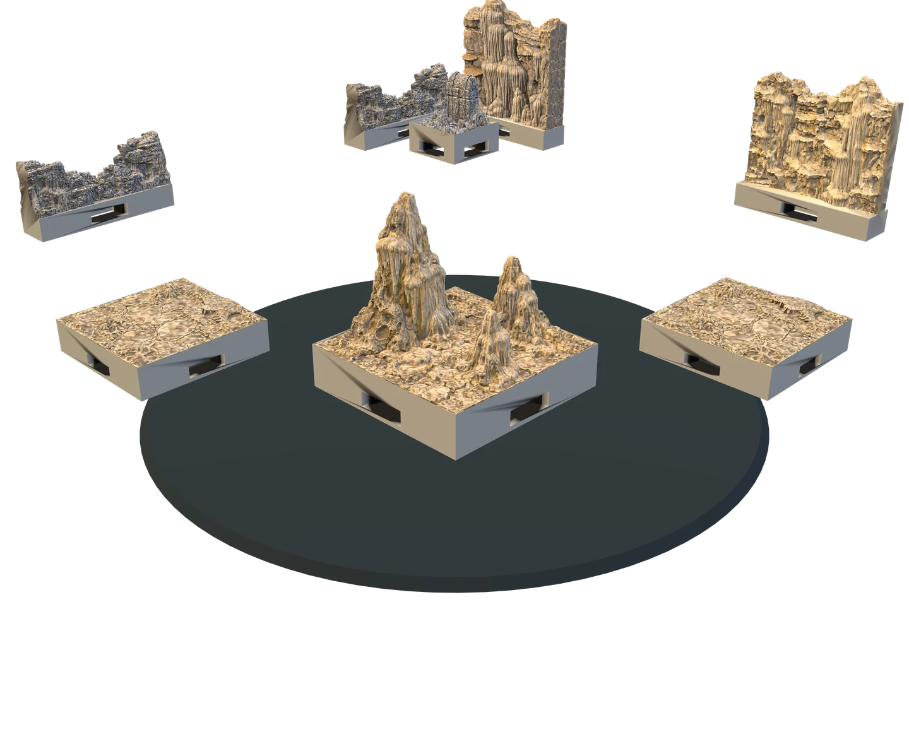
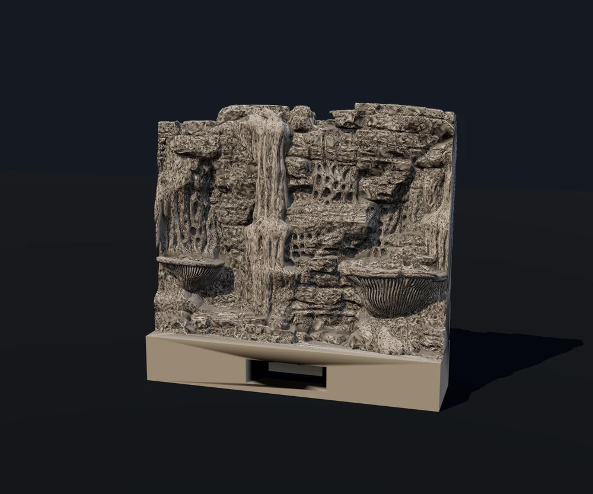
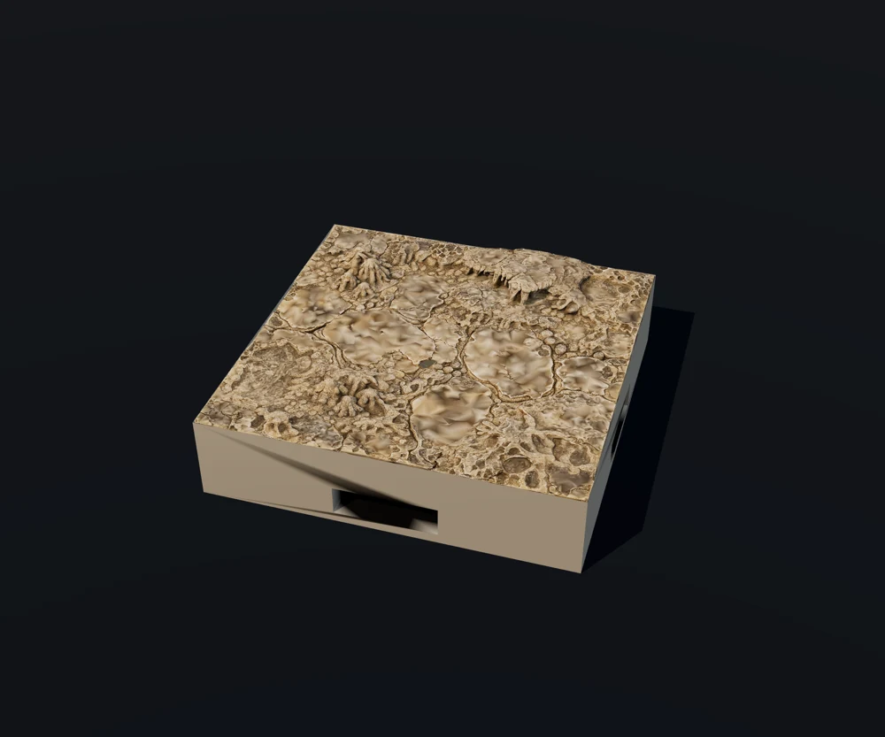
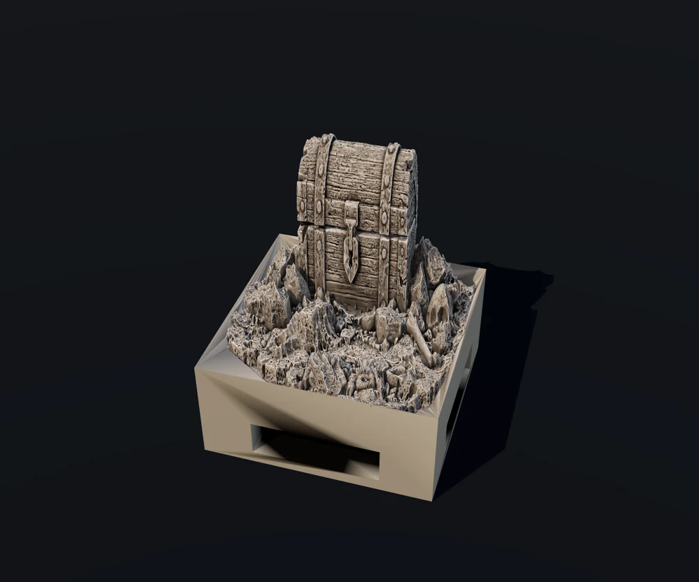
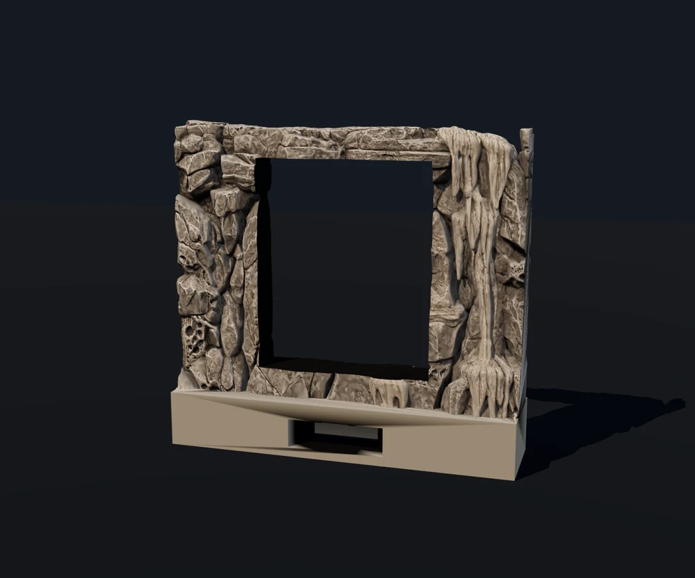

FREE STARTER
FREE STARTERFlowstone cascade wall
Walls · OpenLOCK
YOUR DESKTOP. YOUR WORLD.
Build richly detailed tabletop worlds on your PC. Your scenes, encounters and worlds stay on your computer.
Download for Windows ↓Free desktop editor · Windows 10/11
Scroll to build your grotto ↓
01 / A FOUNDATION WITH CHARACTER
Worn stone, calcite, fossils and pools. The free Deepstone starter collection gives you 50 original detailed pieces to shape your underground world.
Dry joining surfaces share a consistent height, so your floor pieces meet without a raised tray.
02 / BUILD AROUND YOUR STORY
Combine rock walls, sweeping curves, low walls and passages. Integrated OpenLOCK sockets connect your printed pieces.
OpenLOCK licence · Printable Scenery ↗03 / MAKE IT YOUR OWN
Add stalagmites, forgotten armour, treasure and secret doors. Save encounters in your local library, then place them into a larger world.
The editor uses lighter coloured meshes. Print exports use the full-resolution geometry.
No printer? Print it for me ↗
Scroll to assemble your grotto
YOUR FREE STARTER COLLECTION
These are actual generated scenery models from the Deepstone pack included with the client. Click an image for a closer look. Geometry is checked in software; physical print-fit testing is still pending.
FREE STARTERWalls · OpenLOCK

FREE STARTERWalls · OpenLOCK
 FREE STARTER
FREE STARTERWalls · OpenLOCK

FREE STARTERFloors · OpenLOCK
 FREE STARTER
FREE STARTERFloors · OpenLOCK
 FREE STARTER
FREE STARTERDetails · OpenLOCK
 FREE STARTER
FREE STARTERDetails · OpenLOCK

FREE STARTERProps · OpenLOCK
 FREE STARTER
FREE STARTERFloors · OpenLOCK

FREE STARTERWalls · OpenLOCK